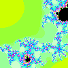
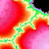
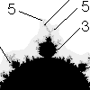

| The
analog of the Mandelbrot set can be defined for
any zn + c, for any integer n > 2. |
|
| Here is an illustration of the effect of the maximum number of iterations
on drawing the Mandelbrot set. |
|
| One of the early surprises of the
Mandelbrot set is that its periphery is filled with a halo of tiny copies
of the entire set,
each of which is surrounded by its own halo of still tinier copies, and so on, on smaller and
smaller scales, without end. |
 |
| Despite appearances, these small copies are attached to the main body of the set, through a
sequence of still smaller copies. That is, the Mandelbrot set is
connected. |
 |
| The large filled-in components of the Mandelbrot set correspond to
stable cycles. |
|
| Because they are determined by iterating the same function, it is no surprise that the
Mandelbrot set and the Julia sets are related. |
 |
| Combinatorics of the
Mandelbrot Set. Associated with each disc and cardioid of the Mandelbrot set is a cycle.
There are simple rules relating the cycle of a feature to those of nearby features. From this
we can build a map of the Mandelbrot set. |
 |